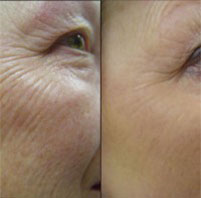
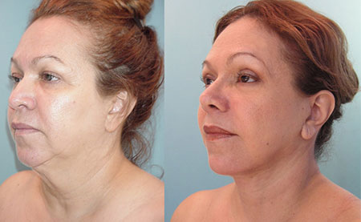

Holtzmann Anna blogja
feljegyzések a női szépségrőlA korosodó Hamupipőke feljegyzései. Avagy hogyan leltem rá a második fiatalságomra és a boldogságra.
Közzétéve 2020 | Szerző: Anna
Először a házassággal kezdeném. A férjemmel még az iskolában ismerkedtünk meg, ott kezdtünk el járni, és korán összeházasodtunk. Néhány évvel később született egy lányunk, és a következő 15 évben éltük az egyszerű kis mindennapjainkat. Először pelenkák, majd óvoda, kettesek és pubertás. A férjemmel kiegyensúlyozott kapcsolatunk volt, botrányoktól és drámáktól mentes, de emellett különösebb szenvedély sem fűtött minket.
Anno még azt hittem, hogy a házimunka örvénye egyszer csak alábbhagy, a lányom függetlenné válik, és akkor majd mi is megkapjuk a jól érdemelt “nászutat” és újra élvezhetjük egymás társaságát, ahogy azt illik. És akkor eljött az idő, a lányom betöltötte a 17-et. És akkor rájöttem, hogy a férjemnél már megkezdődött a nászutas időszak, csak épp nem velem.
Így kezdődött a szomorú hamupipőke történetem!
A sértettség, a megcsalás, a vagyonmegosztás és maga a válás persze nem maradtak nyomok nélkül, és mély ráncok formájában raktározódtak el az emlékek az arcomon. Hét szürke év telt el az életemből, csak a lányom változatos sikerei adtak okot arra, hogy tovább éljek és csak az tartott életben, hogy motiválhatom őt. Azonban lassan a lányom is férjhez ment, én pedig úgy éreztem, hogy úgy nézek ki, mint egy szerencsétlen öregasszony.
Örültem persze nekik, de a gondolat, hogy találkoznom kell a rokonokkal, az ex-férjemmel és az ő új és fiatal feleségével, kihúzta a talajt a lábam alól. Elkezdtem rendszeresen fiatalító maszkokat és krémeket kenni az arcomra, de a használatuk után csak úgy tűnt a számomra, hogy a ráncaim még mélyebbek lettek. Úgy érzem, mintha ez az egész plusz 5 évet tett volna a koromhoz!
Nagy vacilálás után elmentem a kozmetikai klinikára. Ez volt az én utolsó reményem.
Ez volt a visszavágó az után a sok év után, és arra gondoltam, hogy ha ezt most elveszítem, az életem maradék része egyszerűen pokollá válik. Így a klinikára menet rájöttem, hogy bármire készen állok, legyen az botoxra, felvarrás, még arra is, és még az ördögnek is kész vagyok eladni a lelkem, csak hogy visszakapjam a szépségem.
A klinika nagyon tiszteletre méltó volt, és gondoskodott arról, hogy csak valódi, profi
szakemberek dolgozzanak náluk. Tágas előtér, recepció, kedves lányok a pult mögött. Egy hölgy a váróban kedvesen
rám mosolygott, és a tekintetemből egyből megértette, kire van szükségem. Aztán elkísért a megfelelő
irodába.
Az orvos elmondta milyen plasztikai műtéteket végeznek, magyarázatát illusztrációkkal és fotókkal
segítette, már egyenesen a szemem előtt láttam, hogyan leszek fiatalabb.
Ez tényleg lehetséges? Megmenekültem???
Azonban a végén meglehetősen kellemetlen meglepetésként értek a költségek, ugyanis az eljárások árai 2000 €-tól kezdődtek! Lefagyott arccal hagytam el az irodát, és egyszerűen lefagytam attól az érzéstől, hogy le kell mondjak az álmomról. Nincs ennyi pénzem az arcomra, és a belátható jövőben nem is lesz. Minden reményem szertefoszlott!
Egy kedves lány a váróból úgy döntött, hogy rosszul lettem, és bevitt egy kis szolgálati helyiségbe. Ott megnyugtatott és megkínált teával. A tea közben beszélgettünk, elmondtam neki mindent, és sírva fakadtam. És hirtelen elővett egy mobiltelefont a táskájából. Azon tűnődtem, kit akar felhívni és miért.
Az új barátnőm, Mária kacéran megkérdezte:
Mit gondolsz, hány éves
vagyok?
20-25, nem több, biztosan nem idősebb a lányomnál, feleltem
bizonytalanul.
43 éves vagyok, és már van két gyerekem! – mondta komolyan.
Ez
érthető, akkor valószínűleg kedvezményt kap mint klinikai dolgozó, összegeztem a dolgot
irigykedve.
Nem, Anna, ez az én titkom! és Mária mutatott egy honlapot
a telefonján.
Maria mesélt nekem egy hagyományos japán öregedésgátló gyógyszerről, az . Megtudtam, hogy ez a klinikai személyzetének fiatalságának titka, és a kozmtológusok sem sietnek, hogy szike alá feküdjenek vagy botox injekcióikat alkalmazzanak. Mária leírta nekem a hivatalos gyártó honlapjának a címét . Japánban csak online értékesítik, illetve nagykereskedők számára.
Kiszállították az -et. Összességében nem sokat költöttem rá, az ára nem több mint egy alkalom a kozmetikusnál. Még aznap elkezdtem használni, naponta kétszer, néha akár háromszor is használtam, bár a lifting hatás eléréséhez elég lenne napi egyszer is. Az benne a legjobb, hogy az használata rendkívül kényelmes, reggel a mosakodásnál, a munkában ebédszünetben vagy este a tévé előtt is könnyedén alkalmazható. A japán nők fiatalságának titka többé nem titok.
És már egy héten belül gyönyörködhettem a hatásában. A szememen a bőr feszesebb lett, kisimult. Másfél hónap maradt a lányom esküvőjéig.
Két héttel később a bőröm észrevehetően fiatalabb és frissebb volt, mintha 20 évet
fiatalodtam volna. A ráncok még láthatóak voltak, de inkább már szarkalábak voltak, és maga az arcom
is jóval üdébb volt. A bőröm nagyon puha lett.
Egy héttel később kijött a főnököm, és hirtelen azt
mondta:
Anna, mennyit adtál a ráncfelvarrásért? Szép munka! Add meg nekem is a számukat”.
Amikor közöltem, hogy nem csináltattam semmiféle felvarrást, mind a részleget, mind a főnököt
megleptem.
“Na jó, ha nem akarod, nem kell bevallani”, – csak ezt hallottam válaszként.
Még két hét
múlva pedig már úgy néztem ki, mint a lányommal egykorú nők és az esküvő előtti
szabadságon bementem a főnökömhöz és megosztottam vele a titkom.
Kb. 25 évesnek nézek ki, nem többnek, pedig valójában már 56 vagyok ! Egyszerűen nincsenek ráncaim és teljesen sima a bőröm, éa nem csak az arcomon, hanem a mellkasom és a dekoltázsom is irigylésre méltó! (Igen, oda is felkentem a krémet)
Hamupipőke Bál.
De ez még nem minden! Végre eljött a nagy nap.
Az ünnepélyes regisztráció és egész nap csak azt
hallottam, hogy : Nem tudtam, hogy a menyasszonynak van egy húga, nagyon hasonlítanak!
A
szívem mélyén örvendeztem az idő felett aratott győzelmemnek. De a legérdekesebb dolog még hátra
volt, találkoztam az ex-férjemmel, és nem csak vele. A legjobb az volt, hogy az új feleségét majd megette
a sárga irigység.
Én úgy néztem ki, mint a lányom kortársai és az ismerősök irigy
pillantásai igazi áldás volt számomra!)))
Az ex-férjem új felesége jelenetet rendezett, miután az nem
vette le rólam a szemét, és gyorsan el is vonultak.
De a legnagyobb meglepetés csak ezután ért!
Nagyon szórakoztató volt egy elegáns kétszintes
étteremben eltölteni ezt az estét, sokat táncoltam, és nagyon jól szórakoztam, a lányom és a vőlegénye barátai
mind velem akartak flörtölni!
Ez jobb volt bármilyen bóknál.
De a legjobban a
lányom vőlegényánek az egyik kollégája csapta nekem a szelet. Felejthetetlen bókokat árasztott el, és nagyon
meghatóan gondoskodott rólam az egész este folyamán. Nem akarta elhinni, hogy én vagyok a menyasszony anyja. Ami
egy kicsit zavarba is hozott engem, ezért úgy döntöttem, hogy úgymond lerázom. Nem csak nem sikerült elmenekülni
a boldogságom elől.
Először zavarban voltam, mert 27 évvel fiatalabb volt nálam. De ezek csak az egykori életem
félelmei voltak, minden olyan, mint a mesékben.
Sándor nagyon féltékeny a fiatal rajongóimra, én pedig
nagyon örülök ezeknek a változásoknak.
Többé már nem félek a születésnapoktól és a koromtól.
Az
önbizalmat és fiatalságot adott nekem, enélkül nem találtam volna meg a boldogságom.
És most
rajtam a sor, hogy meghívókat küldjek az esküvőnkre! Most én vagyok a fiatal, gyönyörű
menyasszony!
Joggal tehetitek fel a kérdés, ez tényleg lehetséges, de én akkor is azt
válaszolom, hogy IGEN, és ami a legfontosabb, meg is érdemlitek ezt, minden kedves nőtársam.
Lehettek szépek, és ami a legfontosabb, szépnek, fiatalnak és boldognak kell éreznetek magatokat!
A fiatalság forrása létezik, és ez az !
Nos, annak érdekében, hogy az én feliratkozóim is követhessék a példámat, megosztom a honlap címét ahol ez a csodaszer megrendelhető. Próbáljátok ki, és élvezzétek a frissességet és a fiatalos bőrt! És a legfontosabb, az életet!

40 éves! Ez még egyáltalán nem időskor! :) Én 57 éves vagyok, nézzétek csak meg a képet! Már egy éve használom az -et szünetekkel, igaz néha elfelejtem, de a lényeg, hogy nem irritálja a bőröm

Sokat olvastam erről a szerről. Nem hittem, hogy ez a hatás lehetséges. De aztán befutottam egy akcióba az oldalon, és úgy döntött, hogy ezen az áron meg lehet próbálni. És visszavonok minden egyes rossz szót! Nézzétek csak meg a különbséget a mostani és egy héttel ezelőtti fotómon:


Segíteni fog, ne kételkedjen! Én még csak két hete használom, de már most 10 évet fiatalodtam. Nézze csak meg a képet, és Önnél még jobb lesz az eredmény, hiszen jóval fiatalabb nálam!

Meglepett! 40 évesen váltam el, de most már teljes életet élej, 15-20 évvel fiatalabb férfiakkal találkozom, és ellenállhatatlannak érzem magam! Pedig az 50-hez közel vagyok, ne feledjék! Igen, szünet nélkül használom az -et és sportolok is. Jobban nézek ki és vidámabban élek, mint sok más fiatal lány!

A lányom március 8-án ajándlkozott nekem egy -et . Nagyon érdekes szer, és a használata egyszerű. Felfrissít és feszessé tesz. És az eredmény... Az eredmény gyönyörű!!! Most már rólam is azt gondolják, hogy a lányom testvére vagyok.

Engem az mentett meg! Egy barátom tanácsolta, a fiam diplomaosztója előtt. Végül is ki izgul a legjobban egy ilyen napon? Még szép, hogy az anyukák! Köszönöm , én voltam a legszebb!